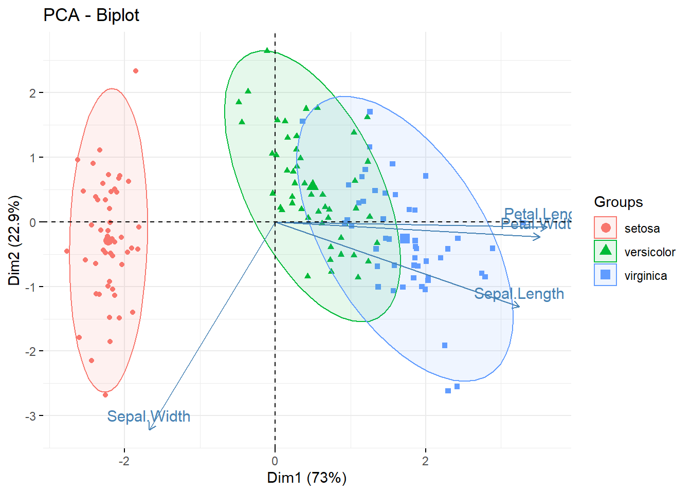

library(tidyverse)
library(ggpubr)
library(ggpmisc)
library(qcc)
library(ggQC)
library(quantmod)
library(easyalluvial)Como construir gráficos para artigo técnico
Exploração
Comunicação
Vídeo tema para este post em Como construir gráficos para artigo técnico
O que é um gráfico
Um meio eficiente de representação e comunicação de dados e pode conter uma quantidade de significativa de informação.
Formato visual de representação de dados que é interpretado em grande velocidade pelo cerebro e que permite ações ou decisões mais rápidas.

Qual o objetivo
Facilitar a identificação de padrões, tendências e discrepancias nos dados transformando em informações.
Permitir ações imediatas ou gerar informação complementar para que ações possam ser tomadas posteriormente.
De onde vem a demanda
Necessidade de representação de dados que potencialize o desenvolvimento de estratégias e ações.
Necessidade de algo que fortaleça o argumento em um estudo ou pesquisa.
Como fazer
Para reproduzir os códigos abaixo serão necessários os pacotes tidyverse , ggpmisc, janitor, qcc, ggpubr, ggQC, quantmod e ggalluvial
Gráfico de comparação
group_compar1 <-
list(c("4","6"),
c("6","8"),
c("4","8"))
mtcars %>%
ggboxplot(x = "cyl",
y= "mpg",
fill = "cyl",
palette = "uchicago")+
stat_compare_means(comparisons = group_compar1)
Plotando estatístics no corpo do gráfico.
mtcars %>%
ggplot(aes(x = wt, y = mpg))+
geom_point()+
stat_fit_tb(method = "lm",
label.x = "right",
method.args = list(formula = y~x),
table.theme = ttheme_gtdark())Plotando fórmulas no corpo do gráfico.
mtcars %>%
ggplot(aes(x = wt, y = mpg))+
geom_point()+
stat_correlation(use_label(c("r", "t", "p")),
label.x = "right")
Plotando dados no corpo do gráfico.
tbl_median_mtcars <-
mtcars %>%
select(mpg, hp, cyl) %>%
group_by(cyl) %>%
summarise(across(where(is.numeric), median)) %>%
ungroup()
data_trans_mtcars <- tibble(x = 5.40, y = 34, tb = list(tbl_median_mtcars))
mtcars %>%
ggplot(aes(x = wt, y = mpg, color = factor(cyl)))+
geom_point()+
geom_table(data= data_trans_mtcars, aes(x=x, y=y, label = tb))Gráfico de cause efeito.
qcc::cause.and.effect(
cause = list(
medida = c("metrica errada"),
maquin = c("defeito"),
metodo = c("treinamento")
),
effect = "efeito"
)Modelo para auxiliar na escolha de gráfico de controle.
flowchart LR
A[dados] -->B{qual tipo \n de dados?}
B -->C[Contínuo]
B -->D[Discreta/\nAtributos]
C -->E{Qual o volume\n de dados ?}
E -->|n = 1|F[x.one + R]
E -->|n 2-10|G[x + R]
E -->|n > 10|H[x + S]
D -->I{Lote de dados\n constante ?}
I-->J[Sim]
I-->K[Não]
J-->L[C Proporção de \ndefeitos por UN]
J-->M[NP Contagem de \ndefeitos por UN]
K-->N[U Contagem de \ndefeitos por UN]
K-->O[P Proporção de \ndefeitos por UN]
Gráfico X bar de controle de processo.
data("pistonrings")
data_pistonring <- as_tibble(pistonrings)
qcc(data_pistonring$diameter,
type = "xbar.one",
rules = shewhart.rules)
List of 11
$ call : language qcc(data = data_pistonring$diameter, type = "xbar.one", rules = shewhart.rules)
$ type : chr "xbar.one"
$ data.name : chr "data_pistonring$diameter"
$ data : num [1:200, 1] 74 74 74 74 74 ...
..- attr(*, "dimnames")=List of 2
$ statistics: Named num [1:200] 74 74 74 74 74 ...
..- attr(*, "names")= chr [1:200] "1" "2" "3" "4" ...
$ sizes : int [1:200] 1 1 1 1 1 1 1 1 1 1 ...
$ center : num 74
$ std.dev : num 0.01
$ nsigmas : num 3
$ limits : num [1, 1:2] 74 74
..- attr(*, "dimnames")=List of 2
$ violations:List of 2
- attr(*, "class")= chr "qcc"Gráfico de pareto.
data_defeito <-
tribble(~"tipo", ~"qtd", ~"custo",
"riscos", 201, 4287.60,
"Manchas",78,2423.46,
"Dobras",47,1118.60,
"Furos",31,8946.60,
"Rasgos",15,1864.05)
pareto_defeito <-
data_defeito %>%
ggplot(aes(x = tipo, y= qtd))+
stat_pareto(bars.fill = "lightblue")
pareto_custo <-
data_defeito %>%
ggplot(aes(x = tipo, y= custo))+
stat_pareto(bars.fill = "navy")
data_defeito %>%
ggplot(aes(x = tipo, y = custo))+
stat_pareto(bars.fill = "navy")+
annotate("plot_npc",
npcx = "right",
npcy = "middle",
label =pareto_defeito )Gráfico de sentimento candlestick chart.
getSymbols("MORTGAGE30US", src= "FRED")[1] "MORTGAGE30US"chart_Series(MORTGAGE30US)
getSymbols("VIXCLS", src= "FRED")[1] "VIXCLS"chart_Series(VIXCLS)
getSymbols("DGS10", src= "FRED")[1] "DGS10"chart_Series(DGS10)getSymbols("VALE")[1] "VALE"chartSeries(VALE)Gráfico de análise multidimensional Alluvial.
plot_mtcars <-
mtcars %>%
alluvial_wide(max_variables = 5)
add_marginal_histograms(plot_mtcars, mtcars)
Gráfico PCA
iris %>%
select(-Species) %>%
prcomp(center = TRUE, scale. = TRUE) %>%
factoextra::fviz_pca_biplot(geom.ind = "point",
habillage = iris$Species,
addEllipses = TRUE)
Pra onde vai quem é o cliente
Etapas de analise de resultados, validação, modelagem ou comunicação.
Inclusão em documento técnico reproduzível.
Comunicação de descobertas ou resultados de trabalhos técnicos
Documentação ou treinamento de pessoal.
Qual o resultado
Aperfeiçoar as técnicas de representação, exploração e comunicação de estudos técnicos.
Facilitar o entendimento das informações contidas nos documentos técnicos poupando tempo e dinheiro, permitindo a replicação e experimentos e consequentemente busca por melhoria.
Facilitar o reconhecimento de registros, estudos, descobertas em pesquisas futuras.